install.packages("sf")
install.packages("rnaturalearth")
install.packages("devtools")
devtools::install_github("ropensci/rnaturalearthhires")
devtools::install_github("valentinitnelav/plotbiomes")Introduction to Simple Features in R
Install libraries for this workshop
Load the required libraries for this workshop
library(sf)
library(rnaturalearth)
library(rnaturalearthhires)
library(tidyverse)
library(ggplot2)Goals
The goals of this workshop are to:
- Become familiar with simple features
- Master simple feature manipulation
- Visualize simple features
Data
Import FluxNet_Sites_2024.csv. This table was created from the FLUXNET site list found at https://fluxnet.org/sites/site-list-and-pages/?view=table.
fluxnet_sites <- read.csv("data/FluxNet_Sites_2024.csv")This dataset includes:
| Column Name | Description |
|---|---|
| SITE_ID | Unique site id |
| SITE_NAME | Site name |
| FLUXNET2015 | License information for the data for the two FLUXNET Products |
| FLUXNET-CH4 | License information for the data for the two FLUXNET Products |
| LOCATION_LAT | Location information |
| LOCATION_LONG | Location information |
| LOCATION_ELEV | Elevation in meters |
| IGBP | Vegetation type |
| MAT | Mean annual temperature in Celsius |
| MAP | Mean annual precipitation in mm |
Take a look at the file:
View(fluxnet_sites)Look at the tower site locations:
fluxnet_sites %>% ggplot() + geom_point(aes(x = LOCATION_LONG, y = LOCATION_LAT))Warning: Removed 1 row containing missing values or values outside the scale range
(`geom_point()`).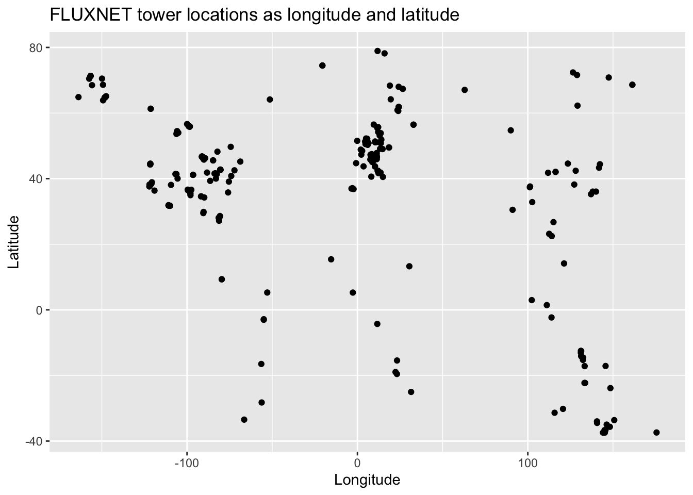
Look at the elevation, mean annual temperature, and mean annual precipitation for the tower site locations:
fluxnet_sites %>% ggplot(aes(x = LOCATION_ELEV)) +
geom_histogram(color = "black", fill = "white")`stat_bin()` using `bins = 30`. Pick better value `binwidth`.Warning: Removed 50 rows containing non-finite outside the scale range
(`stat_bin()`).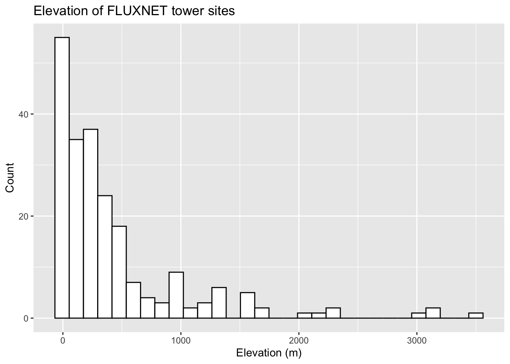
fluxnet_sites %>% ggplot(aes(x = MAT)) +
geom_histogram(color = "black", fill = "white")`stat_bin()` using `bins = 30`. Pick better value `binwidth`.Warning: Removed 59 rows containing non-finite outside the scale range
(`stat_bin()`).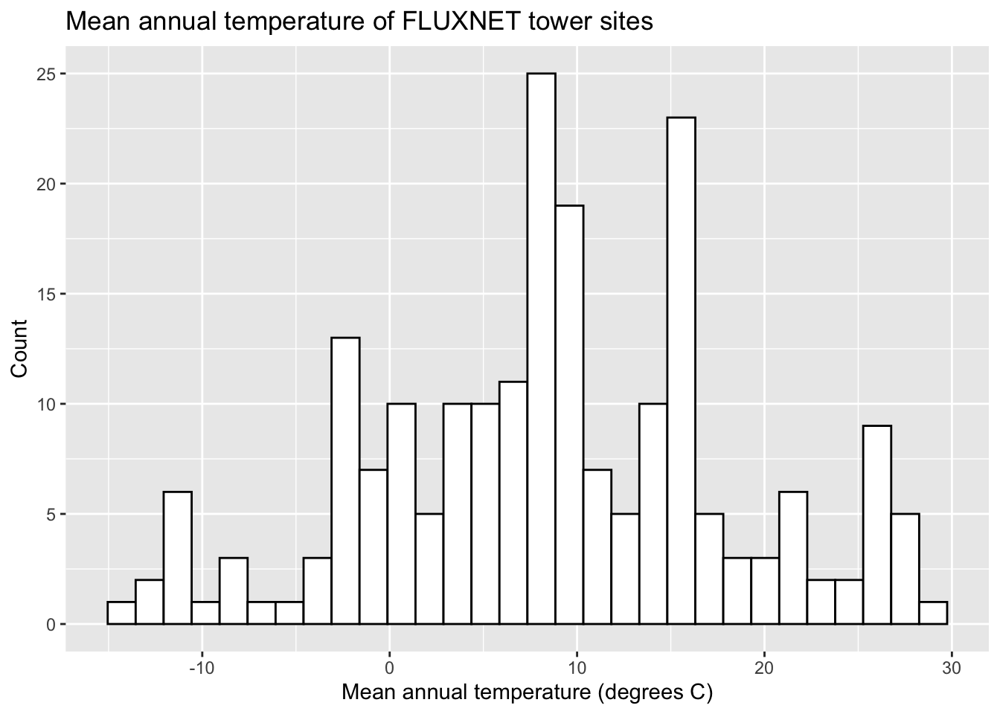
fluxnet_sites %>% ggplot(aes(x = MAP)) +
geom_histogram(color = "black", fill = "white")`stat_bin()` using `bins = 30`. Pick better value `binwidth`.Warning: Removed 60 rows containing non-finite outside the scale range
(`stat_bin()`).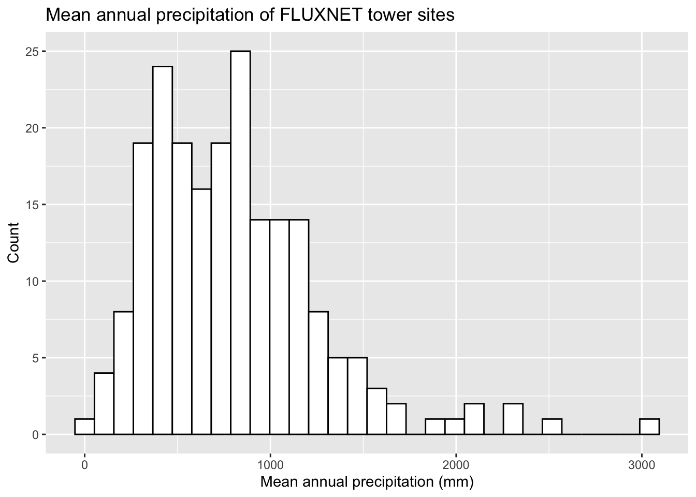
We are interested in exploring the sites with methane data. Let’s subset by FLUXNET-CH4 (read into R as the column FLUXNET.CH4, since R replaces the hyphen with a dot).
fluxnet_ch4 <- fluxnet_sites %>% filter(FLUXNET.CH4 != "")View(fluxnet_ch4)This object is currently a dataframe.
class(fluxnet_ch4)[1] "data.frame"Let’s make it a simple feature using st_as_sf().
fluxnet_ch4_sf <- st_as_sf(x = fluxnet_ch4,
coords = c("LOCATION_LONG", "LOCATION_LAT"),
crs = 4326)
ggplot(data = fluxnet_ch4_sf) + geom_sf()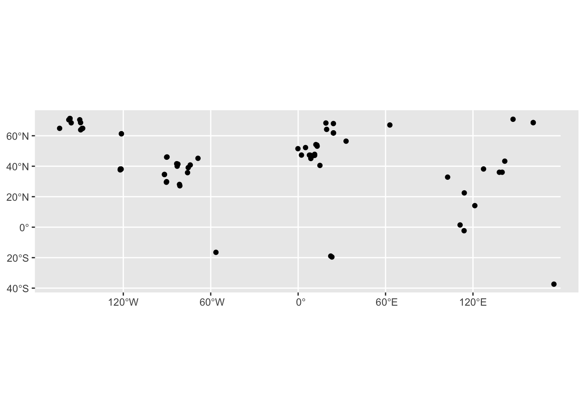
Check the class:
class(fluxnet_ch4_sf)[1] "sf" "data.frame"Simple features describe how objects in the real world can be represented in computers. They have a geometry describing where on earth the feature is located, and they have attributes, which describe other properties about the feature.
Look at the information about the geometry:
fluxnet_ch4_sf$geometryGeometry set for 81 features
Geometry type: POINT
Dimension: XY
Bounding box: xmin: -163.7002 ymin: -37.3879 xmax: 175.5539 ymax: 71.3242
Geodetic CRS: WGS 84
First 5 geometries:POINT (11.3175 47.1167)POINT (-56.412 -16.498)POINT (22.3711 -18.9647)POINT (23.1792 -19.5481)POINT (-121.2984 61.3089)If we print the first three features, we see their attribute values and an abridged version of the geometry.
print(fluxnet_ch4_sf, n = 3)Simple feature collection with 81 features and 8 fields
Geometry type: POINT
Dimension: XY
Bounding box: xmin: -163.7002 ymin: -37.3879 xmax: 175.5539 ymax: 71.3242
Geodetic CRS: WGS 84
First 3 features:
SITE_ID SITE_NAME FLUXNET2015 FLUXNET.CH4 LOCATION_ELEV IGBP
1 AT-Neu Neustift CC-BY-4.0 CC-BY-4.0 970 GRA
2 BR-Npw Northern Pantanal Wetland CC-BY-4.0 120 WSA
3 BW-Gum Guma CC-BY-4.0 950 WET
MAT MAP geometry
1 6.5 852 POINT (11.3175 47.1167)
2 24.9 1486 POINT (-56.412 -16.498)
3 21.0 460 POINT (22.3711 -18.9647)Geometrical Operations
There are many geometrical operations that can be used to achieve simple feature manipulation.
methods(class = "sf") [1] [ [[<-
[3] [<- $<-
[5] aggregate anti_join
[7] arrange as.data.frame
[9] cbind coerce
[11] count dbDataType
[13] dbWriteTable distinct
[15] dplyr_reconstruct drop_na
[17] duplicated filter
[19] full_join gather
[21] group_by group_split
[23] identify initialize
[25] inner_join left_join
[27] merge mutate
[29] nest pivot_longer
[31] pivot_wider plot
[33] points print
[35] rbind rename_with
[37] rename right_join
[39] rowwise sample_frac
[41] sample_n select
[43] semi_join separate_rows
[45] separate show
[47] slice slotsFromS3
[49] spread st_agr
[51] st_agr<- st_area
[53] st_as_s2 st_as_sf
[55] st_as_sfc st_bbox
[57] st_boundary st_break_antimeridian
[59] st_buffer st_cast
[61] st_centroid st_collection_extract
[63] st_concave_hull st_convex_hull
[65] st_coordinates st_crop
[67] st_crs st_crs<-
[69] st_difference st_drop_geometry
[71] st_exterior_ring st_filter
[73] st_geometry st_geometry<-
[75] st_inscribed_circle st_interpolate_aw
[77] st_intersection st_intersects
[79] st_is_full st_is_valid
[81] st_is st_join
[83] st_line_merge st_m_range
[85] st_make_valid st_minimum_bounding_circle
[87] st_minimum_rotated_rectangle st_nearest_points
[89] st_node st_normalize
[91] st_point_on_surface st_polygonize
[93] st_precision st_reverse
[95] st_sample st_segmentize
[97] st_set_precision st_shift_longitude
[99] st_simplify st_snap
[101] st_sym_difference st_transform
[103] st_triangulate_constrained st_triangulate
[105] st_union st_voronoi
[107] st_wrap_dateline st_write
[109] st_z_range st_zm
[111] summarise text
[113] transform transmute
[115] ungroup unite
[117] unnest
see '?methods' for accessing help and source codeBelow we will explore a few methods:
st_is_valid() and st_is_simple() return a boolean indicating whether a geometry is valid or simple.
st_is_valid(fluxnet_ch4_sf) [1] TRUE TRUE TRUE TRUE TRUE TRUE TRUE TRUE TRUE TRUE TRUE TRUE TRUE TRUE TRUE
[16] TRUE TRUE TRUE TRUE TRUE TRUE TRUE TRUE TRUE TRUE TRUE TRUE TRUE TRUE TRUE
[31] TRUE TRUE TRUE TRUE TRUE TRUE TRUE TRUE TRUE TRUE TRUE TRUE TRUE TRUE TRUE
[46] TRUE TRUE TRUE TRUE TRUE TRUE TRUE TRUE TRUE TRUE TRUE TRUE TRUE TRUE TRUE
[61] TRUE TRUE TRUE TRUE TRUE TRUE TRUE TRUE TRUE TRUE TRUE TRUE TRUE TRUE TRUE
[76] TRUE TRUE TRUE TRUE TRUE TRUEIf there were any issues with the geometry you can use st_make_valid() to fix it. Since this is a point file there will be no issues with the geometry.
Change the CRS to a projected EPSG with st_transform.
Coordinate reference systems (CRS) are like measurement units for coordinates: they specify which location on Earth a particular coordinate pair refers to. Simple features have two attributes to store a CRS: epsg and proj4string. This implies that all geometries in a geometry list-column must have the same CRS. Both may be NA, e.g. in case the CRS is unknown, or when we work with local coordinate systems (e.g. inside a building, a body, or an abstract space).
proj4string is a generic, string-based description of a CRS, understood by the PROJ library. It defines projection types and (often) defines parameter values for particular projections, and hence can cover an infinite amount of different projections. This library (also used by GDAL) provides functions to convert or transform between different CRS. epsg is the integer ID for a particular, known CRS that can be resolved into a proj4string. Some proj4string values can be resolved back into their corresponding epsg ID, but this does not always work.
The importance of having epsg values stored with data besides proj4string values is that the epsg refers to a particular, well-known CRS, whose parameters may change (improve) over time; fixing only the proj4string may remove the possibility to benefit from such improvements, and limit some of the provenance of datasets, but may help reproducibility. Coordinate reference system transformations can be carried out using st_transform.
fluxnet_ch4_sf <- st_transform(fluxnet_ch4_sf, crs = 4087)
fluxnet_ch4_sfSimple feature collection with 81 features and 8 fields
Geometry type: POINT
Dimension: XY
Bounding box: xmin: -18223020 ymin: -4162002 xmax: 19542570 ymax: 7939774
Projected CRS: WGS 84 / World Equidistant Cylindrical
First 10 features:
SITE_ID SITE_NAME FLUXNET2015 FLUXNET.CH4 LOCATION_ELEV IGBP
1 AT-Neu Neustift CC-BY-4.0 CC-BY-4.0 970 GRA
2 BR-Npw Northern Pantanal Wetland CC-BY-4.0 120 WSA
3 BW-Gum Guma CC-BY-4.0 950 WET
4 BW-Nxr Nxaraga CC-BY-4.0 950 GRA
5 CA-SCB Scotty Creek Bog CC-BY-4.0 280 WET
6 CA-SCC Scotty Creek Landscape CC-BY-4.0 285 ENF
7 CH-Cha Chamau CC-BY-4.0 CC-BY-4.0 393 GRA
8 CH-Dav Davos CC-BY-4.0 CC-BY-4.0 1639 ENF
9 CH-Oe2 Oensingen crop CC-BY-4.0 CC-BY-4.0 452 CRO
10 CN-Hgu Hongyuan CC-BY-4.0 3500 GRA
MAT MAP geometry
1 6.5 852.0 POINT (1259858 5245007)
2 24.9 1486.0 POINT (-6279755 -1836549)
3 21.0 460.0 POINT (2490339 -2111141)
4 21.0 460.0 POINT (2580297 -2176085)
5 -2.8 388.0 POINT (-13502876 6824876)
6 -2.8 387.6 POINT (-13502965 6824764)
7 9.5 1136.0 POINT (936241.4 5255415)
8 2.8 1062.0 POINT (1097154 5211455)
9 9.8 1155.0 POINT (860911.5 5263898)
10 1.5 747.0 POINT (11420267 3656322)Now the projected CRS is WGS 84 / World Equidistant Cylindrical.
st_distance() returns a dense numeric matrix with distances between geometries:
fluxnet_ch4_sf$mean_distance_km <- st_distance(fluxnet_ch4_sf, fluxnet_ch4_sf) %>% rowMeans() / 1000
fluxnet_ch4_sf %>% ggplot() + geom_sf(aes(col = mean_distance_km))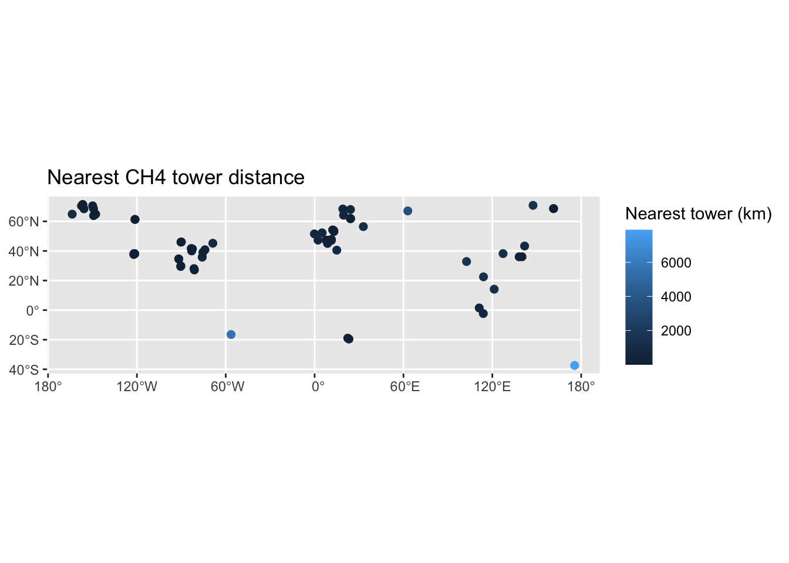
fluxnet_ch4_sf %>% ggplot(aes(x = mean_distance_km)) +
geom_histogram(color = "black", fill = "white")`stat_bin()` using `bins = 30`. Pick better value `binwidth`.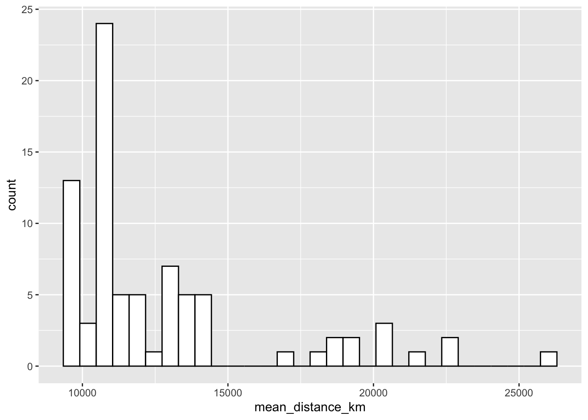
Getting country and state boundaries with rnaturalearth
rnaturalearth provides world map data at several resolutions, including country boundaries with a continent attribute you can filter or group by. Its companion package, rnaturalearthhires, adds higher-resolution boundaries down to the state/province level for individual countries. Together they’re a good general-purpose source for the kind of reference boundaries you’ll often need to visualize or subset other spatial data against.
Key functions:
ne_countries(): Returns country boundaries as an sf object, with a continent column you can filter or group by.
ne_states(): Returns state/province boundaries for a given country (from rnaturalearthhires).
Example:
library(rnaturalearth)
library(rnaturalearthhires)
world <- ne_countries(scale = "medium", returnclass = "sf")
# Get New York state from the US
us_states <- ne_states(country = "United States of America", returnclass = "sf")
new_york <- us_states %>% filter(name == "New York")
new_york %>% ggplot() + geom_sf()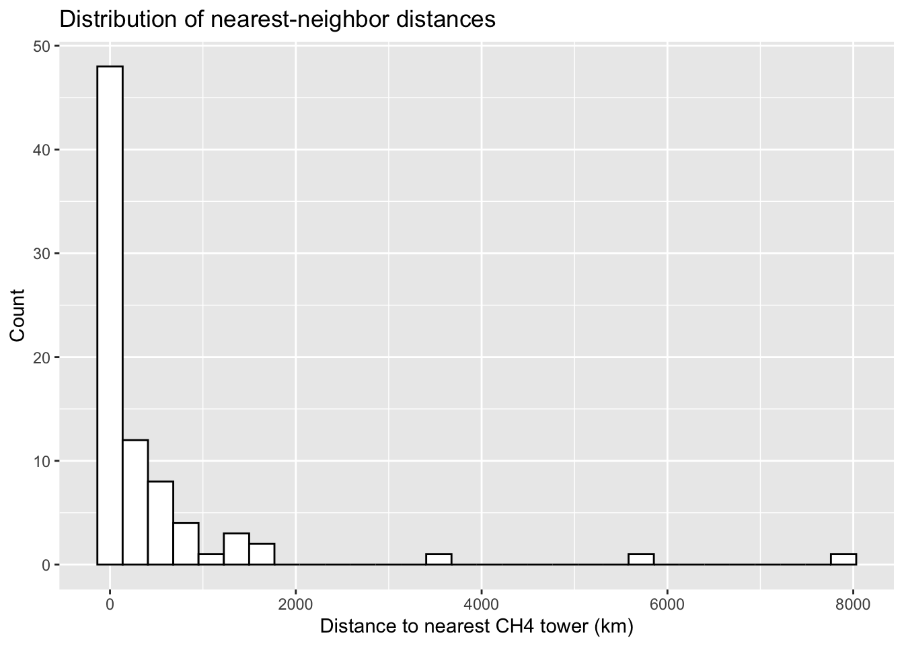
Get a simple feature of every country in South America, and one that unions them into a single South America polygon:
south_america_countries <- world %>% filter(continent == "South America")
south_america <- south_america_countries %>% st_union() %>% st_as_sf()
south_america %>% ggplot() + geom_sf()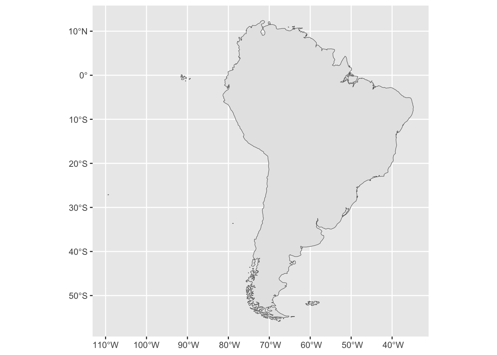
How many features does south_america_countries have, versus south_america? Why?
# Compare nrow() of the two objects here
# ...Re-project south_america to match fluxnet_ch4_sf:
aoi_south_america <- st_transform(south_america, crs = 4087)
aoi_south_america %>% ggplot() + geom_sf()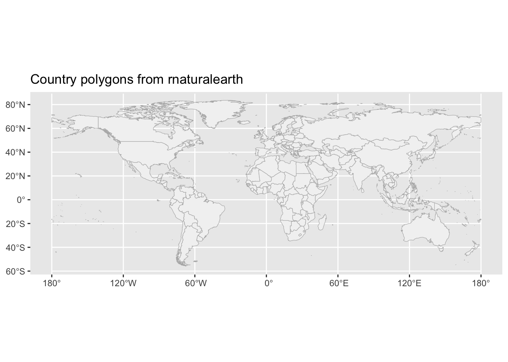
Create a simple feature of Brazil and re-project it to match fluxnet_ch4_sf:
# Create your simple feature object here
# ...The functions st_intersects(), st_disjoint(), st_touches(), st_crosses(), st_within(), st_contains(), st_overlaps(), st_equals(), st_covers(), st_covered_by(), st_equals_exact() and st_is_within_distance() all return a sparse matrix with matching (TRUE) indexes, or a full logical matrix:
How many towers are in South America?
st_intersects(aoi_south_america, fluxnet_ch4_sf)Sparse geometry binary predicate list of length 1, where the predicate
was `intersects'
1: 2st_intersects(aoi_south_america, fluxnet_ch4_sf, sparse = FALSE) [,1] [,2] [,3] [,4] [,5] [,6] [,7] [,8] [,9] [,10] [,11] [,12]
[1,] FALSE TRUE FALSE FALSE FALSE FALSE FALSE FALSE FALSE FALSE FALSE FALSE
[,13] [,14] [,15] [,16] [,17] [,18] [,19] [,20] [,21] [,22] [,23] [,24]
[1,] FALSE FALSE FALSE FALSE FALSE FALSE FALSE FALSE FALSE FALSE FALSE FALSE
[,25] [,26] [,27] [,28] [,29] [,30] [,31] [,32] [,33] [,34] [,35] [,36]
[1,] FALSE FALSE FALSE FALSE FALSE FALSE FALSE FALSE FALSE FALSE FALSE FALSE
[,37] [,38] [,39] [,40] [,41] [,42] [,43] [,44] [,45] [,46] [,47] [,48]
[1,] FALSE FALSE FALSE FALSE FALSE FALSE FALSE FALSE FALSE FALSE FALSE FALSE
[,49] [,50] [,51] [,52] [,53] [,54] [,55] [,56] [,57] [,58] [,59] [,60]
[1,] FALSE FALSE FALSE FALSE FALSE FALSE FALSE FALSE FALSE FALSE FALSE FALSE
[,61] [,62] [,63] [,64] [,65] [,66] [,67] [,68] [,69] [,70] [,71] [,72]
[1,] FALSE FALSE FALSE FALSE FALSE FALSE FALSE FALSE FALSE FALSE FALSE FALSE
[,73] [,74] [,75] [,76] [,77] [,78] [,79] [,80] [,81]
[1,] FALSE FALSE FALSE FALSE FALSE FALSE FALSE FALSE FALSEHow many towers are in Brazil?
# Find out how many towers are in Brazil here
# ...Where possible geometric operations such as st_distance(), st_length() and st_area() report results with a units attribute appropriate for the CRS.
Calculate the area of South America:
aoi_south_america$area <- st_area(aoi_south_america)
aoi_south_america$area1.897703e+13 [m^2]Calculate the area of Brazil:
# Calculate the area here
# ...Visualize the global distribution of towers:
First create a simple feature for every country in Europe, Asia, the Americas, Africa, and Oceania (i.e. all inhabited continents except Antarctica):
aoi_terrestrial <- world %>% filter(continent %in% c("Europe", "Asia", "North America", "South America", "Africa", "Oceania"))
aoi_terrestrial %>% ggplot() + geom_sf()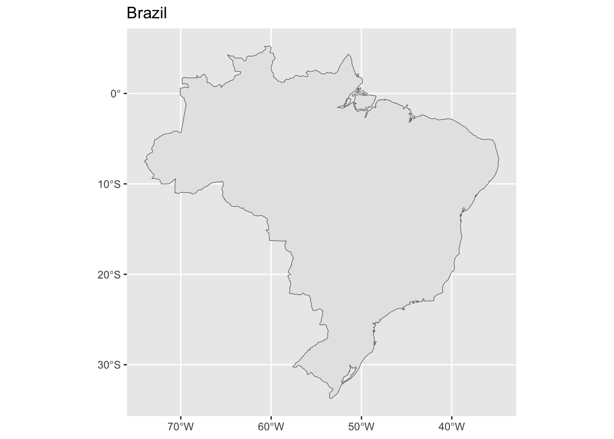
Look at the CRS:
aoi_terrestrialSimple feature collection with 233 features and 168 fields
Geometry type: MULTIPOLYGON
Dimension: XY
Bounding box: xmin: -180 ymin: -55.8917 xmax: 180 ymax: 83.59961
Geodetic CRS: WGS 84
First 10 features:
featurecla scalerank labelrank sovereignt sov_a3
1 Admin-0 country 1 3 Zimbabwe ZWE
2 Admin-0 country 1 3 Zambia ZMB
3 Admin-0 country 1 3 Yemen YEM
4 Admin-0 country 3 2 Vietnam VNM
5 Admin-0 country 5 3 Venezuela VEN
6 Admin-0 country 6 6 Vatican VAT
7 Admin-0 country 1 4 Vanuatu VUT
8 Admin-0 country 1 3 Uzbekistan UZB
9 Admin-0 country 1 4 Uruguay URY
10 Admin-0 country 3 6 Federated States of Micronesia FSM
adm0_dif level type tlc admin adm0_a3
1 0 2 Sovereign country 1 Zimbabwe ZWE
2 0 2 Sovereign country 1 Zambia ZMB
3 0 2 Sovereign country 1 Yemen YEM
4 0 2 Sovereign country 1 Vietnam VNM
5 0 2 Sovereign country 1 Venezuela VEN
6 0 2 Sovereign country 1 Vatican VAT
7 0 2 Sovereign country 1 Vanuatu VUT
8 0 2 Sovereign country 1 Uzbekistan UZB
9 0 2 Sovereign country 1 Uruguay URY
10 0 2 Sovereign country 1 Federated States of Micronesia FSM
geou_dif geounit gu_a3 su_dif
1 0 Zimbabwe ZWE 0
2 0 Zambia ZMB 0
3 0 Yemen YEM 0
4 0 Vietnam VNM 0
5 0 Venezuela VEN 0
6 0 Vatican VAT 0
7 0 Vanuatu VUT 0
8 0 Uzbekistan UZB 0
9 0 Uruguay URY 0
10 0 Federated States of Micronesia FSM 0
subunit su_a3 brk_diff name
1 Zimbabwe ZWE 0 Zimbabwe
2 Zambia ZMB 0 Zambia
3 Yemen YEM 0 Yemen
4 Vietnam VNM 0 Vietnam
5 Venezuela VEN 0 Venezuela
6 Vatican VAT 0 Vatican
7 Vanuatu VUT 0 Vanuatu
8 Uzbekistan UZB 0 Uzbekistan
9 Uruguay URY 0 Uruguay
10 Federated States of Micronesia FSM 0 Micronesia
name_long brk_a3 brk_name brk_group abbrev postal
1 Zimbabwe ZWE Zimbabwe <NA> Zimb. ZW
2 Zambia ZMB Zambia <NA> Zambia ZM
3 Yemen YEM Yemen <NA> Yem. YE
4 Vietnam VNM Vietnam <NA> Viet. VN
5 Venezuela VEN Venezuela <NA> Ven. VE
6 Vatican VAT Vatican <NA> Vat. V
7 Vanuatu VUT Vanuatu <NA> Van. VU
8 Uzbekistan UZB Uzbekistan <NA> Uzb. UZ
9 Uruguay URY Uruguay <NA> Ury. UY
10 Federated States of Micronesia FSM Micronesia <NA> F.S.M. FSM
formal_en formal_fr
1 Republic of Zimbabwe <NA>
2 Republic of Zambia <NA>
3 Republic of Yemen <NA>
4 Socialist Republic of Vietnam <NA>
5 Bolivarian Republic of Venezuela República Bolivariana de Venezuela
6 State of the Vatican City <NA>
7 Republic of Vanuatu <NA>
8 Republic of Uzbekistan <NA>
9 Oriental Republic of Uruguay <NA>
10 Federated States of Micronesia <NA>
name_ciawf note_adm0 note_brk
1 Zimbabwe <NA> <NA>
2 Zambia <NA> <NA>
3 Yemen <NA> <NA>
4 Vietnam <NA> <NA>
5 Venezuela <NA> <NA>
6 Holy See (Vatican City) <NA> <NA>
7 Vanuatu <NA> <NA>
8 Uzbekistan <NA> <NA>
9 Uruguay <NA> <NA>
10 Micronesia, Federated States of <NA> <NA>
name_sort name_alt mapcolor7 mapcolor8 mapcolor9
1 Zimbabwe <NA> 1 5 3
2 Zambia <NA> 5 8 5
3 Yemen, Rep. <NA> 5 3 3
4 Vietnam <NA> 5 6 5
5 Venezuela, RB <NA> 1 3 1
6 Vatican (Holy See) Holy See 1 3 4
7 Vanuatu <NA> 6 3 7
8 Uzbekistan <NA> 2 3 5
9 Uruguay <NA> 1 2 2
10 Micronesia, Federated States of <NA> 5 2 4
mapcolor13 pop_est pop_rank pop_year gdp_md gdp_year
1 9 14645468 14 2019 21440 2019
2 13 17861030 14 2019 23309 2019
3 11 29161922 15 2019 22581 2019
4 4 96462106 16 2019 261921 2019
5 4 28515829 15 2019 482359 2014
6 2 825 2 2019 -99 2019
7 3 299882 10 2019 934 2019
8 4 33580650 15 2019 57921 2019
9 10 3461734 12 2019 56045 2019
10 13 113815 9 2019 401 2018
economy income_grp fips_10 iso_a2 iso_a2_eh
1 5. Emerging region: G20 5. Low income ZI ZW ZW
2 7. Least developed region 4. Lower middle income ZA ZM ZM
3 7. Least developed region 4. Lower middle income YM YE YE
4 5. Emerging region: G20 4. Lower middle income VM VN VN
5 5. Emerging region: G20 3. Upper middle income VE VE VE
6 2. Developed region: nonG7 2. High income: nonOECD VT VA VA
7 7. Least developed region 4. Lower middle income NH VU VU
8 6. Developing region 4. Lower middle income UZ UZ UZ
9 5. Emerging region: G20 3. Upper middle income UY UY UY
10 6. Developing region 4. Lower middle income FM FM FM
iso_a3 iso_a3_eh iso_n3 iso_n3_eh un_a3 wb_a2 wb_a3 woe_id woe_id_eh
1 ZWE ZWE 716 716 716 ZW ZWE 23425004 23425004
2 ZMB ZMB 894 894 894 ZM ZMB 23425003 23425003
3 YEM YEM 887 887 887 RY YEM 23425002 23425002
4 VNM VNM 704 704 704 VN VNM 23424984 23424984
5 VEN VEN 862 862 862 VE VEN 23424982 23424982
6 VAT VAT 336 336 336 -99 -99 23424986 23424986
7 VUT VUT 548 548 548 VU VUT 23424907 23424907
8 UZB UZB 860 860 860 UZ UZB 23424980 23424980
9 URY URY 858 858 858 UY URY 23424979 23424979
10 FSM FSM 583 583 583 FM FSM 23424815 23424815
woe_note adm0_iso adm0_diff adm0_tlc adm0_a3_us adm0_a3_fr
1 Exact WOE match as country ZWE <NA> ZWE ZWE ZWE
2 Exact WOE match as country ZMB <NA> ZMB ZMB ZMB
3 Exact WOE match as country YEM <NA> YEM YEM YEM
4 Exact WOE match as country VNM <NA> VNM VNM VNM
5 Exact WOE match as country VEN <NA> VEN VEN VEN
6 Exact WOE match as country VAT <NA> VAT VAT VAT
7 Exact WOE match as country VUT <NA> VUT VUT VUT
8 Exact WOE match as country UZB <NA> UZB UZB UZB
9 Exact WOE match as country URY <NA> URY URY URY
10 Exact WOE match as country FSM <NA> FSM FSM FSM
adm0_a3_ru adm0_a3_es adm0_a3_cn adm0_a3_tw adm0_a3_in adm0_a3_np adm0_a3_pk
1 ZWE ZWE ZWE ZWE ZWE ZWE ZWE
2 ZMB ZMB ZMB ZMB ZMB ZMB ZMB
3 YEM YEM YEM YEM YEM YEM YEM
4 VNM VNM VNM VNM VNM VNM VNM
5 VEN VEN VEN VEN VEN VEN VEN
6 VAT VAT VAT VAT VAT VAT VAT
7 VUT VUT VUT VUT VUT VUT VUT
8 UZB UZB UZB UZB UZB UZB UZB
9 URY URY URY URY URY URY URY
10 FSM FSM FSM FSM FSM FSM FSM
adm0_a3_de adm0_a3_gb adm0_a3_br adm0_a3_il adm0_a3_ps adm0_a3_sa adm0_a3_eg
1 ZWE ZWE ZWE ZWE ZWE ZWE ZWE
2 ZMB ZMB ZMB ZMB ZMB ZMB ZMB
3 YEM YEM YEM YEM YEM YEM YEM
4 VNM VNM VNM VNM VNM VNM VNM
5 VEN VEN VEN VEN VEN VEN VEN
6 VAT VAT VAT VAT VAT VAT VAT
7 VUT VUT VUT VUT VUT VUT VUT
8 UZB UZB UZB UZB UZB UZB UZB
9 URY URY URY URY URY URY URY
10 FSM FSM FSM FSM FSM FSM FSM
adm0_a3_ma adm0_a3_pt adm0_a3_ar adm0_a3_jp adm0_a3_ko adm0_a3_vn adm0_a3_tr
1 ZWE ZWE ZWE ZWE ZWE ZWE ZWE
2 ZMB ZMB ZMB ZMB ZMB ZMB ZMB
3 YEM YEM YEM YEM YEM YEM YEM
4 VNM VNM VNM VNM VNM VNM VNM
5 VEN VEN VEN VEN VEN VEN VEN
6 VAT VAT VAT VAT VAT VAT VAT
7 VUT VUT VUT VUT VUT VUT VUT
8 UZB UZB UZB UZB UZB UZB UZB
9 URY URY URY URY URY URY URY
10 FSM FSM FSM FSM FSM FSM FSM
adm0_a3_id adm0_a3_pl adm0_a3_gr adm0_a3_it adm0_a3_nl adm0_a3_se adm0_a3_bd
1 ZWE ZWE ZWE ZWE ZWE ZWE ZWE
2 ZMB ZMB ZMB ZMB ZMB ZMB ZMB
3 YEM YEM YEM YEM YEM YEM YEM
4 VNM VNM VNM VNM VNM VNM VNM
5 VEN VEN VEN VEN VEN VEN VEN
6 VAT VAT VAT VAT VAT VAT VAT
7 VUT VUT VUT VUT VUT VUT VUT
8 UZB UZB UZB UZB UZB UZB UZB
9 URY URY URY URY URY URY URY
10 FSM FSM FSM FSM FSM FSM FSM
adm0_a3_ua adm0_a3_un adm0_a3_wb continent region_un subregion
1 ZWE -99 -99 Africa Africa Eastern Africa
2 ZMB -99 -99 Africa Africa Eastern Africa
3 YEM -99 -99 Asia Asia Western Asia
4 VNM -99 -99 Asia Asia South-Eastern Asia
5 VEN -99 -99 South America Americas South America
6 VAT -99 -99 Europe Europe Southern Europe
7 VUT -99 -99 Oceania Oceania Melanesia
8 UZB -99 -99 Asia Asia Central Asia
9 URY -99 -99 South America Americas South America
10 FSM -99 -99 Oceania Oceania Micronesia
region_wb name_len long_len abbrev_len tiny homepart
1 Sub-Saharan Africa 8 8 5 -99 1
2 Sub-Saharan Africa 6 6 6 -99 1
3 Middle East & North Africa 5 5 4 -99 1
4 East Asia & Pacific 7 7 5 2 1
5 Latin America & Caribbean 9 9 4 -99 1
6 Europe & Central Asia 7 7 4 4 1
7 East Asia & Pacific 7 7 4 2 1
8 Europe & Central Asia 10 10 4 5 1
9 Latin America & Caribbean 7 7 4 -99 1
10 East Asia & Pacific 10 30 6 -99 1
min_zoom min_label max_label label_x label_y ne_id wikidataid
1 0 2.5 8.0 29.92544 -18.911640 1159321441 Q954
2 0 3.0 8.0 26.39530 -14.660804 1159321439 Q953
3 0 3.0 8.0 45.87438 15.328226 1159321425 Q805
4 0 2.0 7.0 105.38729 21.715416 1159321417 Q881
5 0 2.5 7.5 -64.59938 7.182476 1159321411 Q717
6 0 5.0 10.0 12.45342 41.903323 1159321407 Q237
7 0 4.0 9.0 166.90876 -15.371530 1159321421 Q686
8 0 3.0 8.0 64.00543 41.693603 1159321405 Q265
9 0 3.0 8.0 -55.96694 -32.961127 1159321353 Q77
10 0 5.0 10.0 158.23402 6.887553 1159320691 Q702
name_ar name_bn
1 زيمبابوي জিম্বাবুয়ে
2 زامبيا জাম্বিয়া
3 اليمن ইয়েমেন
4 فيتنام ভিয়েতনাম
5 فنزويلا ভেনেজুয়েলা
6 الفاتيكان ভ্যাটিকান সিটি
7 فانواتو ভানুয়াতু
8 أوزبكستان উজবেকিস্তান
9 الأوروغواي উরুগুয়ে
10 ولايات ميكرونيسيا المتحدة মাইক্রোনেশিয়া যুক্তরাজ্য
name_de name_en
1 Simbabwe Zimbabwe
2 Sambia Zambia
3 Jemen Yemen
4 Vietnam Vietnam
5 Venezuela Venezuela
6 Vatikanstadt Vatican City
7 Vanuatu Vanuatu
8 Usbekistan Uzbekistan
9 Uruguay Uruguay
10 Föderierte Staaten von Mikronesien Federated States of Micronesia
name_es name_fa name_fr
1 Zimbabue زیمبابوه Zimbabwe
2 Zambia زامبیا Zambie
3 Yemen یمن Yémen
4 Vietnam ویتنام Viêt Nam
5 Venezuela ونزوئلا Venezuela
6 Ciudad del Vaticano واتیکان Cité du Vatican
7 Vanuatu وانواتو Vanuatu
8 Uzbekistán ازبکستان Ouzbékistan
9 Uruguay اروگوئه Uruguay
10 Estados Federados de Micronesia میکرونزی États fédérés de Micronésie
name_el name_he name_hi
1 Ζιμπάμπουε זימבבואה ज़िम्बाब्वे
2 Ζάμπια זמביה ज़ाम्बिया
3 Υεμένη תימן यमन
4 Βιετνάμ וייטנאם वियतनाम
5 Βενεζουέλα ונצואלה वेनेज़ुएला
6 Βατικανό קריית הוותיקן वैटिकन नगर
7 Βανουάτου ונואטו वानूआटू
8 Ουζμπεκιστάν אוזבקיסטן उज़्बेकिस्तान
9 Ουρουγουάη אורוגוואי उरुग्वे
10 Ομόσπονδες Πολιτείες της Μικρονησίας מיקרונזיה माइक्रोनेशिया के संघीकृत राज्य
name_hu name_id name_it
1 Zimbabwe Zimbabwe Zimbabwe
2 Zambia Zambia Zambia
3 Jemen Yaman Yemen
4 Vietnám Vietnam Vietnam
5 Venezuela Venezuela Venezuela
6 Vatikán Vatikan Città del Vaticano
7 Vanuatu Vanuatu Vanuatu
8 Üzbegisztán Uzbekistan Uzbekistan
9 Uruguay Uruguay Uruguay
10 Mikronéziai Szövetségi Államok Mikronesia Stati Federati di Micronesia
name_ja name_ko name_nl name_pl name_pt
1 ジンバブエ 짐바브웨 Zimbabwe Zimbabwe Zimbábue
2 ザンビア 잠비아 Zambia Zambia Zâmbia
3 イエメン 예멘 Jemen Jemen Iémen
4 ベトナム 베트남 Vietnam Wietnam Vietname
5 ベネズエラ 베네수엘라 Venezuela Wenezuela Venezuela
6 バチカン 바티칸 시국 Vaticaanstad Watykan Vaticano
7 バヌアツ 바누아투 Vanuatu Vanuatu Vanuatu
8 ウズベキスタン 우즈베키스탄 Oezbekistan Uzbekistan Uzbequistão
9 ウルグアイ 우루과이 Uruguay Urugwaj Uruguai
10 ミクロネシア連邦 미크로네시아 연방 Micronesia Mikronezja Micronésia
name_ru name_sv name_tr name_uk name_ur
1 Зимбабве Zimbabwe Zimbabve Зімбабве زمبابوے
2 Замбия Zambia Zambiya Замбія زیمبیا
3 Йемен Jemen Yemen Ємен یمن
4 Вьетнам Vietnam Vietnam В'єтнам ویتنام
5 Венесуэла Venezuela Venezuela Венесуела وینیزویلا
6 Ватикан Vatikanstaten Vatikan Ватикан ویٹیکن سٹی
7 Вануату Vanuatu Vanuatu Вануату وانواتو
8 Узбекистан Uzbekistan Özbekistan Узбекистан ازبکستان
9 Уругвай Uruguay Uruguay Уругвай یوراگوئے
10 Микронезия Mikronesiska federationen Mikronezya Мікронезія مائیکرونیشیا
name_vi name_zh name_zht fclass_iso tlc_diff
1 Zimbabwe 津巴布韦 辛巴威 Admin-0 country <NA>
2 Zambia 赞比亚 尚比亞 Admin-0 country <NA>
3 Yemen 也门 葉門 Admin-0 country <NA>
4 Việt Nam 越南 越南 Admin-0 country <NA>
5 Venezuela 委内瑞拉 委內瑞拉 Admin-0 country <NA>
6 Thành Vatican 梵蒂冈 梵蒂岡 Admin-0 country <NA>
7 Vanuatu 瓦努阿图 萬那杜 Admin-0 country <NA>
8 Uzbekistan 乌兹别克斯坦 烏茲別克 Admin-0 country <NA>
9 Uruguay 乌拉圭 烏拉圭 Admin-0 country <NA>
10 Micronesia 密克罗尼西亚联邦 密克羅尼西亞聯邦 Admin-0 country <NA>
fclass_tlc fclass_us fclass_fr fclass_ru fclass_es fclass_cn fclass_tw
1 Admin-0 country <NA> <NA> <NA> <NA> <NA> <NA>
2 Admin-0 country <NA> <NA> <NA> <NA> <NA> <NA>
3 Admin-0 country <NA> <NA> <NA> <NA> <NA> <NA>
4 Admin-0 country <NA> <NA> <NA> <NA> <NA> <NA>
5 Admin-0 country <NA> <NA> <NA> <NA> <NA> <NA>
6 Admin-0 country <NA> <NA> <NA> <NA> <NA> <NA>
7 Admin-0 country <NA> <NA> <NA> <NA> <NA> <NA>
8 Admin-0 country <NA> <NA> <NA> <NA> <NA> <NA>
9 Admin-0 country <NA> <NA> <NA> <NA> <NA> <NA>
10 Admin-0 country <NA> <NA> <NA> <NA> <NA> <NA>
fclass_in fclass_np fclass_pk fclass_de fclass_gb fclass_br fclass_il
1 <NA> <NA> <NA> <NA> <NA> <NA> <NA>
2 <NA> <NA> <NA> <NA> <NA> <NA> <NA>
3 <NA> <NA> <NA> <NA> <NA> <NA> <NA>
4 <NA> <NA> <NA> <NA> <NA> <NA> <NA>
5 <NA> <NA> <NA> <NA> <NA> <NA> <NA>
6 <NA> <NA> <NA> <NA> <NA> <NA> <NA>
7 <NA> <NA> <NA> <NA> <NA> <NA> <NA>
8 <NA> <NA> <NA> <NA> <NA> <NA> <NA>
9 <NA> <NA> <NA> <NA> <NA> <NA> <NA>
10 <NA> <NA> <NA> <NA> <NA> <NA> <NA>
fclass_ps fclass_sa fclass_eg fclass_ma fclass_pt fclass_ar fclass_jp
1 <NA> <NA> <NA> <NA> <NA> <NA> <NA>
2 <NA> <NA> <NA> <NA> <NA> <NA> <NA>
3 <NA> <NA> <NA> <NA> <NA> <NA> <NA>
4 <NA> <NA> <NA> <NA> <NA> <NA> <NA>
5 <NA> <NA> <NA> <NA> <NA> <NA> <NA>
6 <NA> <NA> <NA> <NA> <NA> <NA> <NA>
7 <NA> <NA> <NA> <NA> <NA> <NA> <NA>
8 <NA> <NA> <NA> <NA> <NA> <NA> <NA>
9 <NA> <NA> <NA> <NA> <NA> <NA> <NA>
10 <NA> <NA> <NA> <NA> <NA> <NA> <NA>
fclass_ko fclass_vn fclass_tr fclass_id fclass_pl fclass_gr fclass_it
1 <NA> <NA> <NA> <NA> <NA> <NA> <NA>
2 <NA> <NA> <NA> <NA> <NA> <NA> <NA>
3 <NA> <NA> <NA> <NA> <NA> <NA> <NA>
4 <NA> <NA> <NA> <NA> <NA> <NA> <NA>
5 <NA> <NA> <NA> <NA> <NA> <NA> <NA>
6 <NA> <NA> <NA> <NA> <NA> <NA> <NA>
7 <NA> <NA> <NA> <NA> <NA> <NA> <NA>
8 <NA> <NA> <NA> <NA> <NA> <NA> <NA>
9 <NA> <NA> <NA> <NA> <NA> <NA> <NA>
10 <NA> <NA> <NA> <NA> <NA> <NA> <NA>
fclass_nl fclass_se fclass_bd fclass_ua geometry
1 <NA> <NA> <NA> <NA> MULTIPOLYGON (((31.28789 -2...
2 <NA> <NA> <NA> <NA> MULTIPOLYGON (((30.39609 -1...
3 <NA> <NA> <NA> <NA> MULTIPOLYGON (((53.08564 16...
4 <NA> <NA> <NA> <NA> MULTIPOLYGON (((104.064 10....
5 <NA> <NA> <NA> <NA> MULTIPOLYGON (((-60.82119 9...
6 <NA> <NA> <NA> <NA> MULTIPOLYGON (((12.43916 41...
7 <NA> <NA> <NA> <NA> MULTIPOLYGON (((166.7458 -1...
8 <NA> <NA> <NA> <NA> MULTIPOLYGON (((70.94678 42...
9 <NA> <NA> <NA> <NA> MULTIPOLYGON (((-53.37061 -...
10 <NA> <NA> <NA> <NA> MULTIPOLYGON (((162.9832 5....Re-project the polygon to match fluxnet_ch4_sf:
aoi_terrestrial <- aoi_terrestrial %>% st_transform(4087)
aoi_terrestrialSimple feature collection with 233 features and 168 fields
Geometry type: MULTIPOLYGON
Dimension: XY
Bounding box: xmin: -20037510 ymin: -6221835 xmax: 20037510 ymax: 9306266
Projected CRS: WGS 84 / World Equidistant Cylindrical
First 10 features:
featurecla scalerank labelrank sovereignt sov_a3
1 Admin-0 country 1 3 Zimbabwe ZWE
2 Admin-0 country 1 3 Zambia ZMB
3 Admin-0 country 1 3 Yemen YEM
4 Admin-0 country 3 2 Vietnam VNM
5 Admin-0 country 5 3 Venezuela VEN
6 Admin-0 country 6 6 Vatican VAT
7 Admin-0 country 1 4 Vanuatu VUT
8 Admin-0 country 1 3 Uzbekistan UZB
9 Admin-0 country 1 4 Uruguay URY
10 Admin-0 country 3 6 Federated States of Micronesia FSM
adm0_dif level type tlc admin adm0_a3
1 0 2 Sovereign country 1 Zimbabwe ZWE
2 0 2 Sovereign country 1 Zambia ZMB
3 0 2 Sovereign country 1 Yemen YEM
4 0 2 Sovereign country 1 Vietnam VNM
5 0 2 Sovereign country 1 Venezuela VEN
6 0 2 Sovereign country 1 Vatican VAT
7 0 2 Sovereign country 1 Vanuatu VUT
8 0 2 Sovereign country 1 Uzbekistan UZB
9 0 2 Sovereign country 1 Uruguay URY
10 0 2 Sovereign country 1 Federated States of Micronesia FSM
geou_dif geounit gu_a3 su_dif
1 0 Zimbabwe ZWE 0
2 0 Zambia ZMB 0
3 0 Yemen YEM 0
4 0 Vietnam VNM 0
5 0 Venezuela VEN 0
6 0 Vatican VAT 0
7 0 Vanuatu VUT 0
8 0 Uzbekistan UZB 0
9 0 Uruguay URY 0
10 0 Federated States of Micronesia FSM 0
subunit su_a3 brk_diff name
1 Zimbabwe ZWE 0 Zimbabwe
2 Zambia ZMB 0 Zambia
3 Yemen YEM 0 Yemen
4 Vietnam VNM 0 Vietnam
5 Venezuela VEN 0 Venezuela
6 Vatican VAT 0 Vatican
7 Vanuatu VUT 0 Vanuatu
8 Uzbekistan UZB 0 Uzbekistan
9 Uruguay URY 0 Uruguay
10 Federated States of Micronesia FSM 0 Micronesia
name_long brk_a3 brk_name brk_group abbrev postal
1 Zimbabwe ZWE Zimbabwe <NA> Zimb. ZW
2 Zambia ZMB Zambia <NA> Zambia ZM
3 Yemen YEM Yemen <NA> Yem. YE
4 Vietnam VNM Vietnam <NA> Viet. VN
5 Venezuela VEN Venezuela <NA> Ven. VE
6 Vatican VAT Vatican <NA> Vat. V
7 Vanuatu VUT Vanuatu <NA> Van. VU
8 Uzbekistan UZB Uzbekistan <NA> Uzb. UZ
9 Uruguay URY Uruguay <NA> Ury. UY
10 Federated States of Micronesia FSM Micronesia <NA> F.S.M. FSM
formal_en formal_fr
1 Republic of Zimbabwe <NA>
2 Republic of Zambia <NA>
3 Republic of Yemen <NA>
4 Socialist Republic of Vietnam <NA>
5 Bolivarian Republic of Venezuela República Bolivariana de Venezuela
6 State of the Vatican City <NA>
7 Republic of Vanuatu <NA>
8 Republic of Uzbekistan <NA>
9 Oriental Republic of Uruguay <NA>
10 Federated States of Micronesia <NA>
name_ciawf note_adm0 note_brk
1 Zimbabwe <NA> <NA>
2 Zambia <NA> <NA>
3 Yemen <NA> <NA>
4 Vietnam <NA> <NA>
5 Venezuela <NA> <NA>
6 Holy See (Vatican City) <NA> <NA>
7 Vanuatu <NA> <NA>
8 Uzbekistan <NA> <NA>
9 Uruguay <NA> <NA>
10 Micronesia, Federated States of <NA> <NA>
name_sort name_alt mapcolor7 mapcolor8 mapcolor9
1 Zimbabwe <NA> 1 5 3
2 Zambia <NA> 5 8 5
3 Yemen, Rep. <NA> 5 3 3
4 Vietnam <NA> 5 6 5
5 Venezuela, RB <NA> 1 3 1
6 Vatican (Holy See) Holy See 1 3 4
7 Vanuatu <NA> 6 3 7
8 Uzbekistan <NA> 2 3 5
9 Uruguay <NA> 1 2 2
10 Micronesia, Federated States of <NA> 5 2 4
mapcolor13 pop_est pop_rank pop_year gdp_md gdp_year
1 9 14645468 14 2019 21440 2019
2 13 17861030 14 2019 23309 2019
3 11 29161922 15 2019 22581 2019
4 4 96462106 16 2019 261921 2019
5 4 28515829 15 2019 482359 2014
6 2 825 2 2019 -99 2019
7 3 299882 10 2019 934 2019
8 4 33580650 15 2019 57921 2019
9 10 3461734 12 2019 56045 2019
10 13 113815 9 2019 401 2018
economy income_grp fips_10 iso_a2 iso_a2_eh
1 5. Emerging region: G20 5. Low income ZI ZW ZW
2 7. Least developed region 4. Lower middle income ZA ZM ZM
3 7. Least developed region 4. Lower middle income YM YE YE
4 5. Emerging region: G20 4. Lower middle income VM VN VN
5 5. Emerging region: G20 3. Upper middle income VE VE VE
6 2. Developed region: nonG7 2. High income: nonOECD VT VA VA
7 7. Least developed region 4. Lower middle income NH VU VU
8 6. Developing region 4. Lower middle income UZ UZ UZ
9 5. Emerging region: G20 3. Upper middle income UY UY UY
10 6. Developing region 4. Lower middle income FM FM FM
iso_a3 iso_a3_eh iso_n3 iso_n3_eh un_a3 wb_a2 wb_a3 woe_id woe_id_eh
1 ZWE ZWE 716 716 716 ZW ZWE 23425004 23425004
2 ZMB ZMB 894 894 894 ZM ZMB 23425003 23425003
3 YEM YEM 887 887 887 RY YEM 23425002 23425002
4 VNM VNM 704 704 704 VN VNM 23424984 23424984
5 VEN VEN 862 862 862 VE VEN 23424982 23424982
6 VAT VAT 336 336 336 -99 -99 23424986 23424986
7 VUT VUT 548 548 548 VU VUT 23424907 23424907
8 UZB UZB 860 860 860 UZ UZB 23424980 23424980
9 URY URY 858 858 858 UY URY 23424979 23424979
10 FSM FSM 583 583 583 FM FSM 23424815 23424815
woe_note adm0_iso adm0_diff adm0_tlc adm0_a3_us adm0_a3_fr
1 Exact WOE match as country ZWE <NA> ZWE ZWE ZWE
2 Exact WOE match as country ZMB <NA> ZMB ZMB ZMB
3 Exact WOE match as country YEM <NA> YEM YEM YEM
4 Exact WOE match as country VNM <NA> VNM VNM VNM
5 Exact WOE match as country VEN <NA> VEN VEN VEN
6 Exact WOE match as country VAT <NA> VAT VAT VAT
7 Exact WOE match as country VUT <NA> VUT VUT VUT
8 Exact WOE match as country UZB <NA> UZB UZB UZB
9 Exact WOE match as country URY <NA> URY URY URY
10 Exact WOE match as country FSM <NA> FSM FSM FSM
adm0_a3_ru adm0_a3_es adm0_a3_cn adm0_a3_tw adm0_a3_in adm0_a3_np adm0_a3_pk
1 ZWE ZWE ZWE ZWE ZWE ZWE ZWE
2 ZMB ZMB ZMB ZMB ZMB ZMB ZMB
3 YEM YEM YEM YEM YEM YEM YEM
4 VNM VNM VNM VNM VNM VNM VNM
5 VEN VEN VEN VEN VEN VEN VEN
6 VAT VAT VAT VAT VAT VAT VAT
7 VUT VUT VUT VUT VUT VUT VUT
8 UZB UZB UZB UZB UZB UZB UZB
9 URY URY URY URY URY URY URY
10 FSM FSM FSM FSM FSM FSM FSM
adm0_a3_de adm0_a3_gb adm0_a3_br adm0_a3_il adm0_a3_ps adm0_a3_sa adm0_a3_eg
1 ZWE ZWE ZWE ZWE ZWE ZWE ZWE
2 ZMB ZMB ZMB ZMB ZMB ZMB ZMB
3 YEM YEM YEM YEM YEM YEM YEM
4 VNM VNM VNM VNM VNM VNM VNM
5 VEN VEN VEN VEN VEN VEN VEN
6 VAT VAT VAT VAT VAT VAT VAT
7 VUT VUT VUT VUT VUT VUT VUT
8 UZB UZB UZB UZB UZB UZB UZB
9 URY URY URY URY URY URY URY
10 FSM FSM FSM FSM FSM FSM FSM
adm0_a3_ma adm0_a3_pt adm0_a3_ar adm0_a3_jp adm0_a3_ko adm0_a3_vn adm0_a3_tr
1 ZWE ZWE ZWE ZWE ZWE ZWE ZWE
2 ZMB ZMB ZMB ZMB ZMB ZMB ZMB
3 YEM YEM YEM YEM YEM YEM YEM
4 VNM VNM VNM VNM VNM VNM VNM
5 VEN VEN VEN VEN VEN VEN VEN
6 VAT VAT VAT VAT VAT VAT VAT
7 VUT VUT VUT VUT VUT VUT VUT
8 UZB UZB UZB UZB UZB UZB UZB
9 URY URY URY URY URY URY URY
10 FSM FSM FSM FSM FSM FSM FSM
adm0_a3_id adm0_a3_pl adm0_a3_gr adm0_a3_it adm0_a3_nl adm0_a3_se adm0_a3_bd
1 ZWE ZWE ZWE ZWE ZWE ZWE ZWE
2 ZMB ZMB ZMB ZMB ZMB ZMB ZMB
3 YEM YEM YEM YEM YEM YEM YEM
4 VNM VNM VNM VNM VNM VNM VNM
5 VEN VEN VEN VEN VEN VEN VEN
6 VAT VAT VAT VAT VAT VAT VAT
7 VUT VUT VUT VUT VUT VUT VUT
8 UZB UZB UZB UZB UZB UZB UZB
9 URY URY URY URY URY URY URY
10 FSM FSM FSM FSM FSM FSM FSM
adm0_a3_ua adm0_a3_un adm0_a3_wb continent region_un subregion
1 ZWE -99 -99 Africa Africa Eastern Africa
2 ZMB -99 -99 Africa Africa Eastern Africa
3 YEM -99 -99 Asia Asia Western Asia
4 VNM -99 -99 Asia Asia South-Eastern Asia
5 VEN -99 -99 South America Americas South America
6 VAT -99 -99 Europe Europe Southern Europe
7 VUT -99 -99 Oceania Oceania Melanesia
8 UZB -99 -99 Asia Asia Central Asia
9 URY -99 -99 South America Americas South America
10 FSM -99 -99 Oceania Oceania Micronesia
region_wb name_len long_len abbrev_len tiny homepart
1 Sub-Saharan Africa 8 8 5 -99 1
2 Sub-Saharan Africa 6 6 6 -99 1
3 Middle East & North Africa 5 5 4 -99 1
4 East Asia & Pacific 7 7 5 2 1
5 Latin America & Caribbean 9 9 4 -99 1
6 Europe & Central Asia 7 7 4 4 1
7 East Asia & Pacific 7 7 4 2 1
8 Europe & Central Asia 10 10 4 5 1
9 Latin America & Caribbean 7 7 4 -99 1
10 East Asia & Pacific 10 30 6 -99 1
min_zoom min_label max_label label_x label_y ne_id wikidataid
1 0 2.5 8.0 29.92544 -18.911640 1159321441 Q954
2 0 3.0 8.0 26.39530 -14.660804 1159321439 Q953
3 0 3.0 8.0 45.87438 15.328226 1159321425 Q805
4 0 2.0 7.0 105.38729 21.715416 1159321417 Q881
5 0 2.5 7.5 -64.59938 7.182476 1159321411 Q717
6 0 5.0 10.0 12.45342 41.903323 1159321407 Q237
7 0 4.0 9.0 166.90876 -15.371530 1159321421 Q686
8 0 3.0 8.0 64.00543 41.693603 1159321405 Q265
9 0 3.0 8.0 -55.96694 -32.961127 1159321353 Q77
10 0 5.0 10.0 158.23402 6.887553 1159320691 Q702
name_ar name_bn
1 زيمبابوي জিম্বাবুয়ে
2 زامبيا জাম্বিয়া
3 اليمن ইয়েমেন
4 فيتنام ভিয়েতনাম
5 فنزويلا ভেনেজুয়েলা
6 الفاتيكان ভ্যাটিকান সিটি
7 فانواتو ভানুয়াতু
8 أوزبكستان উজবেকিস্তান
9 الأوروغواي উরুগুয়ে
10 ولايات ميكرونيسيا المتحدة মাইক্রোনেশিয়া যুক্তরাজ্য
name_de name_en
1 Simbabwe Zimbabwe
2 Sambia Zambia
3 Jemen Yemen
4 Vietnam Vietnam
5 Venezuela Venezuela
6 Vatikanstadt Vatican City
7 Vanuatu Vanuatu
8 Usbekistan Uzbekistan
9 Uruguay Uruguay
10 Föderierte Staaten von Mikronesien Federated States of Micronesia
name_es name_fa name_fr
1 Zimbabue زیمبابوه Zimbabwe
2 Zambia زامبیا Zambie
3 Yemen یمن Yémen
4 Vietnam ویتنام Viêt Nam
5 Venezuela ونزوئلا Venezuela
6 Ciudad del Vaticano واتیکان Cité du Vatican
7 Vanuatu وانواتو Vanuatu
8 Uzbekistán ازبکستان Ouzbékistan
9 Uruguay اروگوئه Uruguay
10 Estados Federados de Micronesia میکرونزی États fédérés de Micronésie
name_el name_he name_hi
1 Ζιμπάμπουε זימבבואה ज़िम्बाब्वे
2 Ζάμπια זמביה ज़ाम्बिया
3 Υεμένη תימן यमन
4 Βιετνάμ וייטנאם वियतनाम
5 Βενεζουέλα ונצואלה वेनेज़ुएला
6 Βατικανό קריית הוותיקן वैटिकन नगर
7 Βανουάτου ונואטו वानूआटू
8 Ουζμπεκιστάν אוזבקיסטן उज़्बेकिस्तान
9 Ουρουγουάη אורוגוואי उरुग्वे
10 Ομόσπονδες Πολιτείες της Μικρονησίας מיקרונזיה माइक्रोनेशिया के संघीकृत राज्य
name_hu name_id name_it
1 Zimbabwe Zimbabwe Zimbabwe
2 Zambia Zambia Zambia
3 Jemen Yaman Yemen
4 Vietnám Vietnam Vietnam
5 Venezuela Venezuela Venezuela
6 Vatikán Vatikan Città del Vaticano
7 Vanuatu Vanuatu Vanuatu
8 Üzbegisztán Uzbekistan Uzbekistan
9 Uruguay Uruguay Uruguay
10 Mikronéziai Szövetségi Államok Mikronesia Stati Federati di Micronesia
name_ja name_ko name_nl name_pl name_pt
1 ジンバブエ 짐바브웨 Zimbabwe Zimbabwe Zimbábue
2 ザンビア 잠비아 Zambia Zambia Zâmbia
3 イエメン 예멘 Jemen Jemen Iémen
4 ベトナム 베트남 Vietnam Wietnam Vietname
5 ベネズエラ 베네수엘라 Venezuela Wenezuela Venezuela
6 バチカン 바티칸 시국 Vaticaanstad Watykan Vaticano
7 バヌアツ 바누아투 Vanuatu Vanuatu Vanuatu
8 ウズベキスタン 우즈베키스탄 Oezbekistan Uzbekistan Uzbequistão
9 ウルグアイ 우루과이 Uruguay Urugwaj Uruguai
10 ミクロネシア連邦 미크로네시아 연방 Micronesia Mikronezja Micronésia
name_ru name_sv name_tr name_uk name_ur
1 Зимбабве Zimbabwe Zimbabve Зімбабве زمبابوے
2 Замбия Zambia Zambiya Замбія زیمبیا
3 Йемен Jemen Yemen Ємен یمن
4 Вьетнам Vietnam Vietnam В'єтнам ویتنام
5 Венесуэла Venezuela Venezuela Венесуела وینیزویلا
6 Ватикан Vatikanstaten Vatikan Ватикан ویٹیکن سٹی
7 Вануату Vanuatu Vanuatu Вануату وانواتو
8 Узбекистан Uzbekistan Özbekistan Узбекистан ازبکستان
9 Уругвай Uruguay Uruguay Уругвай یوراگوئے
10 Микронезия Mikronesiska federationen Mikronezya Мікронезія مائیکرونیشیا
name_vi name_zh name_zht fclass_iso tlc_diff
1 Zimbabwe 津巴布韦 辛巴威 Admin-0 country <NA>
2 Zambia 赞比亚 尚比亞 Admin-0 country <NA>
3 Yemen 也门 葉門 Admin-0 country <NA>
4 Việt Nam 越南 越南 Admin-0 country <NA>
5 Venezuela 委内瑞拉 委內瑞拉 Admin-0 country <NA>
6 Thành Vatican 梵蒂冈 梵蒂岡 Admin-0 country <NA>
7 Vanuatu 瓦努阿图 萬那杜 Admin-0 country <NA>
8 Uzbekistan 乌兹别克斯坦 烏茲別克 Admin-0 country <NA>
9 Uruguay 乌拉圭 烏拉圭 Admin-0 country <NA>
10 Micronesia 密克罗尼西亚联邦 密克羅尼西亞聯邦 Admin-0 country <NA>
fclass_tlc fclass_us fclass_fr fclass_ru fclass_es fclass_cn fclass_tw
1 Admin-0 country <NA> <NA> <NA> <NA> <NA> <NA>
2 Admin-0 country <NA> <NA> <NA> <NA> <NA> <NA>
3 Admin-0 country <NA> <NA> <NA> <NA> <NA> <NA>
4 Admin-0 country <NA> <NA> <NA> <NA> <NA> <NA>
5 Admin-0 country <NA> <NA> <NA> <NA> <NA> <NA>
6 Admin-0 country <NA> <NA> <NA> <NA> <NA> <NA>
7 Admin-0 country <NA> <NA> <NA> <NA> <NA> <NA>
8 Admin-0 country <NA> <NA> <NA> <NA> <NA> <NA>
9 Admin-0 country <NA> <NA> <NA> <NA> <NA> <NA>
10 Admin-0 country <NA> <NA> <NA> <NA> <NA> <NA>
fclass_in fclass_np fclass_pk fclass_de fclass_gb fclass_br fclass_il
1 <NA> <NA> <NA> <NA> <NA> <NA> <NA>
2 <NA> <NA> <NA> <NA> <NA> <NA> <NA>
3 <NA> <NA> <NA> <NA> <NA> <NA> <NA>
4 <NA> <NA> <NA> <NA> <NA> <NA> <NA>
5 <NA> <NA> <NA> <NA> <NA> <NA> <NA>
6 <NA> <NA> <NA> <NA> <NA> <NA> <NA>
7 <NA> <NA> <NA> <NA> <NA> <NA> <NA>
8 <NA> <NA> <NA> <NA> <NA> <NA> <NA>
9 <NA> <NA> <NA> <NA> <NA> <NA> <NA>
10 <NA> <NA> <NA> <NA> <NA> <NA> <NA>
fclass_ps fclass_sa fclass_eg fclass_ma fclass_pt fclass_ar fclass_jp
1 <NA> <NA> <NA> <NA> <NA> <NA> <NA>
2 <NA> <NA> <NA> <NA> <NA> <NA> <NA>
3 <NA> <NA> <NA> <NA> <NA> <NA> <NA>
4 <NA> <NA> <NA> <NA> <NA> <NA> <NA>
5 <NA> <NA> <NA> <NA> <NA> <NA> <NA>
6 <NA> <NA> <NA> <NA> <NA> <NA> <NA>
7 <NA> <NA> <NA> <NA> <NA> <NA> <NA>
8 <NA> <NA> <NA> <NA> <NA> <NA> <NA>
9 <NA> <NA> <NA> <NA> <NA> <NA> <NA>
10 <NA> <NA> <NA> <NA> <NA> <NA> <NA>
fclass_ko fclass_vn fclass_tr fclass_id fclass_pl fclass_gr fclass_it
1 <NA> <NA> <NA> <NA> <NA> <NA> <NA>
2 <NA> <NA> <NA> <NA> <NA> <NA> <NA>
3 <NA> <NA> <NA> <NA> <NA> <NA> <NA>
4 <NA> <NA> <NA> <NA> <NA> <NA> <NA>
5 <NA> <NA> <NA> <NA> <NA> <NA> <NA>
6 <NA> <NA> <NA> <NA> <NA> <NA> <NA>
7 <NA> <NA> <NA> <NA> <NA> <NA> <NA>
8 <NA> <NA> <NA> <NA> <NA> <NA> <NA>
9 <NA> <NA> <NA> <NA> <NA> <NA> <NA>
10 <NA> <NA> <NA> <NA> <NA> <NA> <NA>
fclass_nl fclass_se fclass_bd fclass_ua geometry
1 <NA> <NA> <NA> <NA> MULTIPOLYGON (((3482952 -24...
2 <NA> <NA> <NA> <NA> MULTIPOLYGON (((3383678 -17...
3 <NA> <NA> <NA> <NA> MULTIPOLYGON (((5909467 185...
4 <NA> <NA> <NA> <NA> MULTIPOLYGON (((11584348 11...
5 <NA> <NA> <NA> <NA> MULTIPOLYGON (((-6770584 10...
6 <NA> <NA> <NA> <NA> MULTIPOLYGON (((1384721 466...
7 <NA> <NA> <NA> <NA> MULTIPOLYGON (((18562058 -1...
8 <NA> <NA> <NA> <NA> MULTIPOLYGON (((7897759 470...
9 <NA> <NA> <NA> <NA> MULTIPOLYGON (((-5941189 -3...
10 <NA> <NA> <NA> <NA> MULTIPOLYGON (((18143207 59...Visualize the shapefile you created:
aoi_terrestrial %>% ggplot() + geom_sf()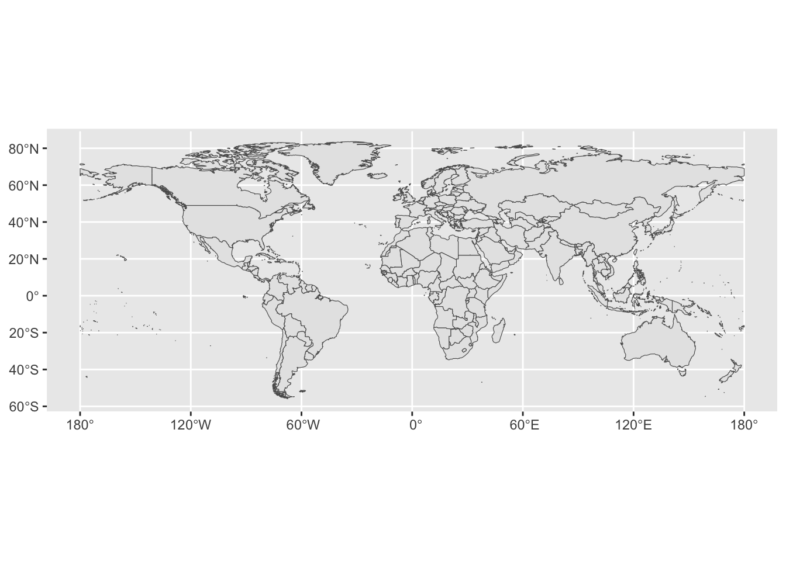
Use ggplot to visualize the global distribution of Fluxnet CH4 sites:
ggplot() + geom_sf(data = aoi_terrestrial) + geom_sf(data = fluxnet_ch4_sf)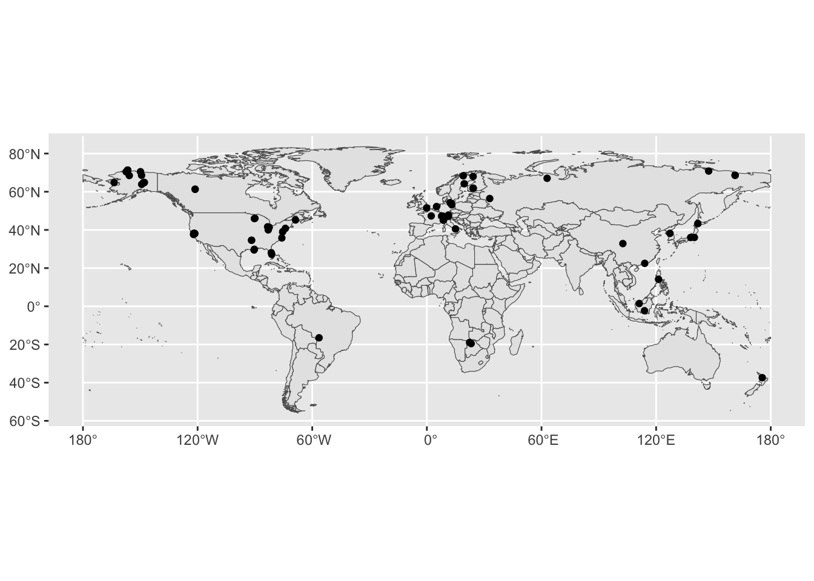
Extract the country from the world simple feature into fluxnet_ch4_sf. A straight st_intersection() can return more or fewer rows than you started with (a point can sit exactly on a shared border and match two polygons, or fall outside all of them, e.g. small islands at this map resolution), so join back on SITE_ID instead of assigning the result directly:
country_lookup <- st_intersection(aoi_terrestrial, fluxnet_ch4_sf) %>%
st_drop_geometry() %>%
select(SITE_ID, name) %>%
distinct(SITE_ID, .keep_all = TRUE)Warning: attribute variables are assumed to be spatially constant throughout
all geometriesfluxnet_ch4_sf <- fluxnet_ch4_sf %>%
left_join(country_lookup, by = "SITE_ID") %>%
rename(country = name)Explore the Fluxnet CH4 sites:
names(fluxnet_ch4_sf) [1] "SITE_ID" "SITE_NAME" "FLUXNET2015" "FLUXNET.CH4"
[5] "LOCATION_ELEV" "IGBP" "MAT" "MAP"
[9] "mean_distance_km" "country" "geometry" ggplot(data = fluxnet_ch4_sf) + geom_point(aes(x = MAT, y = MAP))Warning: Removed 10 rows containing missing values or values outside the scale range
(`geom_point()`).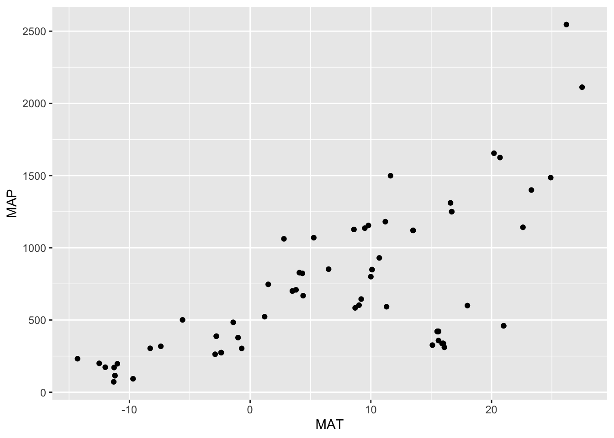
ggplot(data = fluxnet_ch4_sf) + geom_point(aes(x = MAT, y = MAP, col = IGBP))Warning: Removed 10 rows containing missing values or values outside the scale range
(`geom_point()`).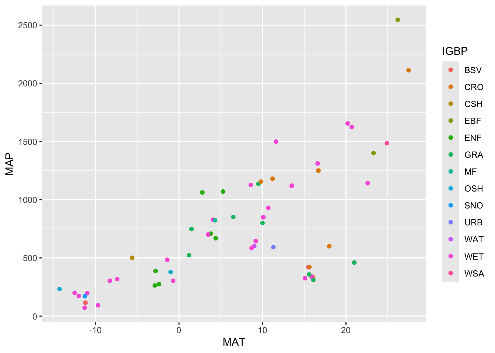
fluxnet_ch4_sf$IGBP <- as.factor(fluxnet_ch4_sf$IGBP)
summary(fluxnet_ch4_sf$IGBP)BSV CRO CSH EBF ENF GRA MF OSH SNO URB WAT WET WSA
2 13 1 4 7 9 1 2 1 1 2 37 1 Writing files using st_write:
When writing, you can use the following arguments to control update and delete: update=TRUE causes an existing data source to be updated, if it exists; this option is by default TRUE for all database drivers, where the database is updated by adding a table.
delete_layer=TRUE causes st_write to try to open the data source and delete the layer; no errors are given if the data source is not present, or the layer does not exist in the data source.
delete_dsn=TRUE causes st_write to delete the data source when present, before writing the layer in a newly created data source. No error is given when the data source does not exist. This option should be handled with care, as it may wipe complete directories or databases.
write_sf(fluxnet_ch4_sf, "data/products/fluxnet_ch4.shp")It is possible to create data.frame objects with geometry list-columns that are not of class sf by:
fluxnet_ch4_df <- as.data.frame(fluxnet_ch4_sf)Check the class:
class(fluxnet_ch4_df)[1] "data.frame"Such objects: no longer register which column is the geometry list-column, no longer have a plot method, and lack all of the other dedicated methods listed above for class sf. To write this object:
write.csv(fluxnet_ch4_df, "data/fluxnet_ch4.csv")Additional Reading:
S. Scheider, B. Gräler, E. Pebesma, C. Stasch, 2016. Modelling spatio-temporal information generation. Int J of Geographic Information Science, 30 (10), 1980-2008. (open access) Stasch, C., S. Scheider, E. Pebesma, W. Kuhn, 2014. Meaningful Spatial Prediction and Aggregation. Environmental Modelling & Software, 51, (149–165, open access).
Assignment:
Write a 3-page report on the distribution of tower sites discussing the strengths and weakness of the current tower representation. Please create 2 visualizations. You are welcome to use any additional data.